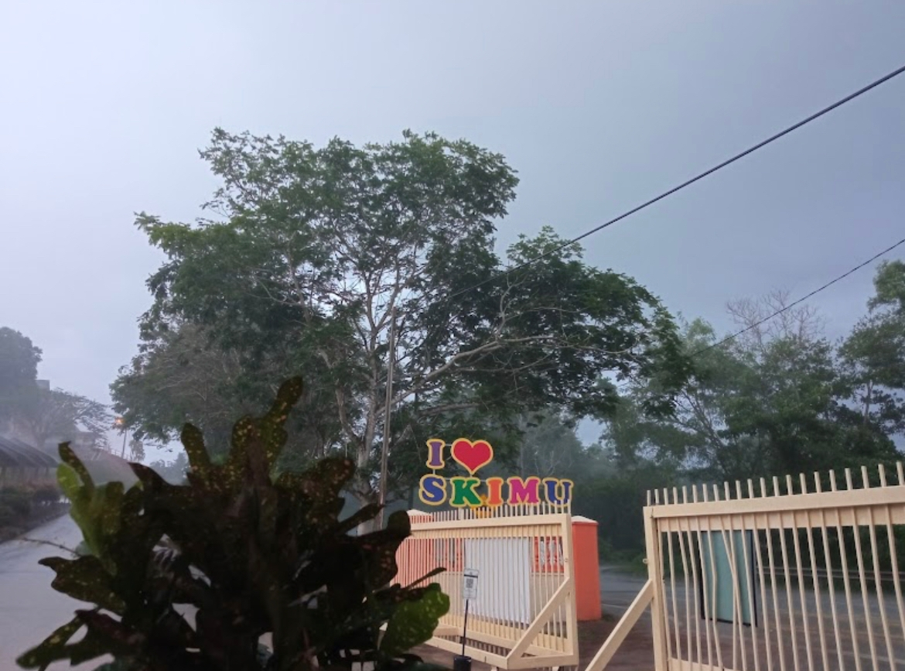
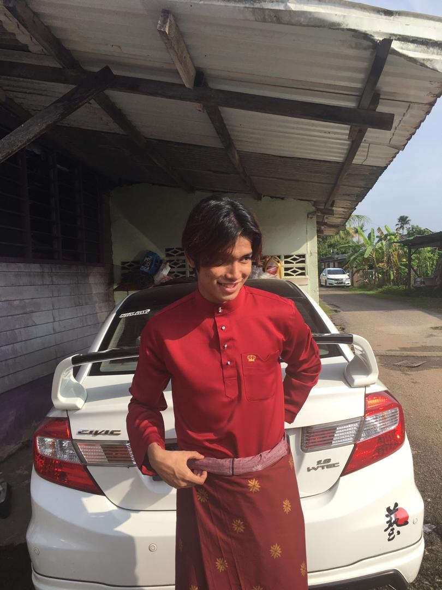

EDUCATION
Sekolah Kebangsaan Cenderawasih (2009 - 2012)

Sekolah Kebangsaan Indera Mahkota Utama
Sekolah Menengah Tengku Panglima Perang Tengku Muhammad (2015-2019)

I welcome you with open arms to explore my world. So, sit back and just unwind while we get to know each other better!
This is my small family. My father and mother divorced when I was 4 years old. They both went their separate ways and I was looked after by my grandparents. Sadly, my grandparents passed away and I was completely taken care of by my paternal aunt.
Everyone in the picture is my uncles and aunts and my cousins. They will always make sure I'm there at every celebration whether it's a celebration or a party so that I don't feel left out.
My aunt, mazlina binti ab rahman is 36 years old, full time housewife. He took care of me since my grandparents were gone. She is married to Rizalmie and has three daughters who are my favorite cousins.
None of them treated me like an outsider. I was treated like their own child. All food and learning needs are provided by them.
Even though my parents are divorced, I don't feel any lack of family love. I know they also want the best for their child and I know that my mother and father always love me and my other siblings. My aunt and uncle gave enough love.
They always give support in any situation whether it is money or spirit. May they always be under the grace of Allah swt.
I'm Fiziey Mazrizal Bin Mazlim, born in HTAA Kuantan, Pahang. I am the 2nd child of 5 siblings. Currently, I am studying at UITM, Malaysia. I am grateful to be born into a loving and supportive family who have always been there for me since I was little.
I've always been interested in education and learning new things. That is why I chose to study Information Management at UITM. I believe that the field of information management is critical for today's digital age, and that it will play an important role in shaping how businesses and organisations operate in the future. I'm looking forward to learning more about data management, systems analysis, and information technology. I'm also excited to learn about the latest industry trends and technologies in order to stay current in the field.
In the future, I hope to secure a job in a reputed company where I can apply my knowledge and skills in a practical setting. I am also determined to pursue further studies in my field, and I hope to obtain a degree in the near future. I believe that with my dedication and passion for learning, I will be able to achieve my career goals.
Football is a fast-paced sport that requires ability, agility, skills and precision. It is a sport that people of all ages and skill levels can enjoy, making it a popular pastime all over the world. The thrill of the game fuels our passion for football, and the feeling of football is when we score a goal. It is an outdoor sport that is a great way to stay active and improve your physical fitness. Many people find that playing football helps them to relax and improve their mental health.
Listening to music is a passion for many people, and it can have a powerful impact on our emotions. Whether it's a song that makes us feel happy, a ballad that brings us to tears, or a piece of music that helps us to relax, music can evoke a wide range of feelings and memories. People listen to music for different reasons, it can be for entertainment, to express themselves, to cope with difficult emotions, or even to enhance their athletic performance. People often find solace in music and it can be a powerful way to connect with others and share in a common experience. I am also playing games . It’s also a great way to unwind and relax after a long day.
I want to learn more about my religion, Islam, and gain a better understanding of its teachings and principles. I believe that by studying the Quran and Hadith and learning from scholars and experienced practitioners, I will be able to strengthen my faith and grow as a Muslim. I also want to be a role model for others by applying the knowledge and wisdom I've gained from my studies in my daily life. I intend to get more involved in my community by volunteering and attending religious activities and events. I believe that by serving others and spreading the message of Islam, I can improve the lives of those around me.
1. District representative in Pahang level Football Tournament (2011)
2. Sportman (2018)
3. Became a Member Of the Information Management Association in Uitm Machang